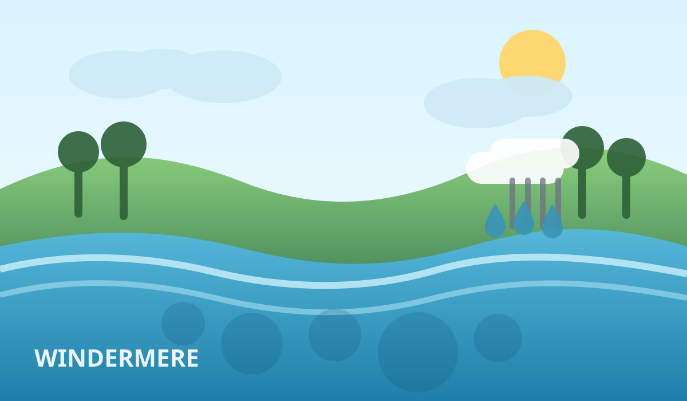

Windermere'i järve uuring näitab viise kliimamõju nullimiseks

BBC kirjutab, et Inglismaa suurima järve Windermere'i uuring näitab, et kliimamõju ei ole ette kirjutatud: kui reovesi järve ei pääse ja toitainete koormus alla saab, langeb sinivetika risk kõvasti.
Uuringu mudelid näitavad, et järve keskmine temperatuur võib sajandi lõpuks tõusta 2,4–2,5 kraadi. See tähendab rohkem toitaineid vees ja rohkem sinivetikaid — ehk siis suplushooaja jaoks mitte just kõige armsam prognoos.
Hea uudis on, et kolm sammu töötavad koos: reovee peatamine, põllumajandusliku äravoolu vähendamine ja reoveepuhastuse parandamine. Kui midagi päriselt teha, saab järve tulevikku paremini suunata kui lihtsalt käsi laiutades ja ilma süüdistades.
Loe algallikat: BBC News – "Windermere study shows ways to 'cancel out' climate change impact"
selle artikli sisu sõnastatud AI poolt: (mudel gpt-5.4-mini)